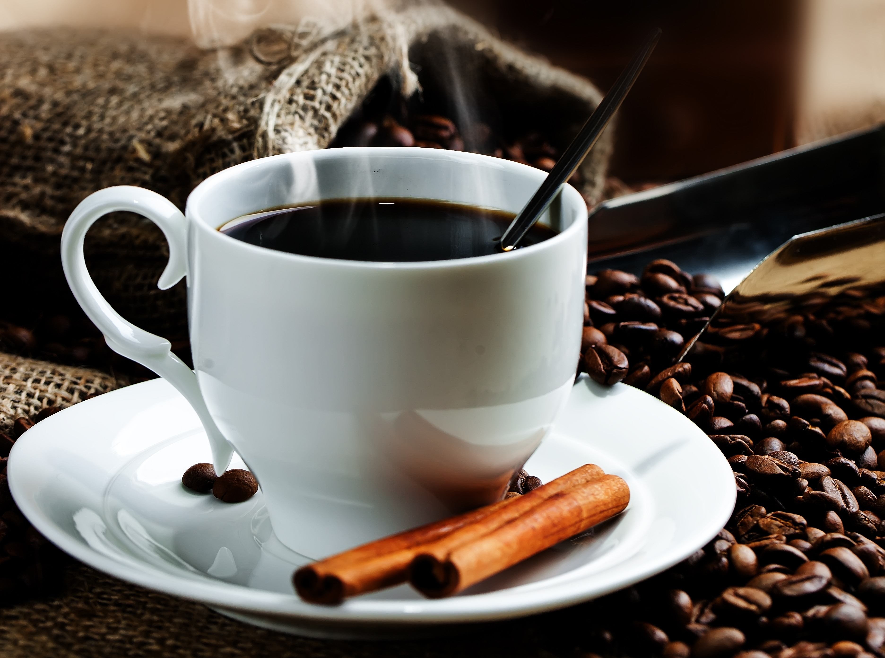

Discover the best coffee
ever in your life and enjoy
“A place for coffee, friends, and fun” “Coffee with a side of life. ” “The best way to start your day!” “We love what we do!” “Pour your heart into it.” “It’s always better when you’re here.” “Where the coffee never runs out” “The perfect place to get your caffeine fix”

Nitrous coffee
Nitrous coffee is a fairly recent invention
Black eye
A black eye is an even stronger option
Mocha
A mocha is a latte that has been sweetened with chocolate syrup or cocoa powder
Section 1
Why, yes, I could start my day without coffee. But I like being able to remember things
like how to say words and put on pants.
Iced coffee
Unlike cold brew, iced coffee is chilled hot coffee.
Refrigerate your freshly brewed black coffee,
add ice and maybe a splash of cream or sugar, and there you have it.
we love coffee alot and much much
o make creamy black coffee, simply add milk, cream, or half
and half to your coffee.
This will smooth the flavors and tone down any bitterness from your coffee beans.
we love coffee alot and much much
Low acidity and sweet,
brew coffee is made by adding coarsely ground beans to cold water
and letting the mixture brew for several hours.
You can also make a cold brew mocha!
Why, yes, I could start my day without coffee. But I like being able to remember things
like how to say words and put on pants.we love coffee alot and much muchwe love coffee alot and much much
we love coffee alot and much much